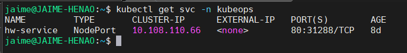

GitOps Demo Project
Proyecto de demostración que implementa un pipeline completo de GitOps utilizando Kubernetes, GitHub Actions y ArgoCD.
üéØ Objetivo
Demostrar la implementación de un flujo de trabajo GitOps completo para una aplicación web simple, incluyendo:
- Automatización de CI/CD con GitHub Actions
- Containerización con Docker
- Despliegue en Kubernetes
- Gestión de configuración con ArgoCD
üèóÔ∏è Arquitectura
graph LR
A[Código Fuente] --> B[GitHub Actions]
B --> C[Docker Registry]
C --> D[ArgoCD]
D --> E[Kubernetes Cluster]
E --> F[Aplicación Desplegada]
Vista de la Aplicación en Kubernetes
Servicios y Networking

üì¶ Componentes
1. Aplicación Web
Tecnología : HTML estáticoContenedor : Docker con NginxPuerto : 80
2. CI/CD Pipeline
Plataforma : GitHub ActionsTrigger : Push a main branchAcciones :
Build de imagen Docker
Push a registry
Actualización de manifiestos K8s
3. Infraestructura Kubernetes
Deployment : Gestión de pods de la aplicaciónService : Exposición de la aplicaciónIngress : Routing externo (opcional)
4. GitOps con ArgoCD
Monitoreo : Repositorio de manifiestosSincronización : AutomáticaRollback : Capacidad de volver a versiones anteriores
üöÄ Estructura del Proyecto
1
2
3
4
5
6
7
8
9
10
11
12 GitOps/
├── .github/
│ └── workflows/
│ └── cd.yml # Pipeline CI/CD
├── Docker/
│ ├── Dockerfile # Imagen de la aplicación
│ └── index.html # Aplicación web
├── Kubernetes/
│ ├── deployment.yaml # Deployment de K8s
│ └── service.yaml # Service de K8s
├── doc/ # Documentación y diagramas
└── README.md
⚡ Quick Start
Prerrequisitos
Cluster de Kubernetes
kubectl configurado
ArgoCD instalado
Acceso a Docker Registry
1. Clonar Repositorio
git clone https://github.com/Portfolio-jaime/GitOps.git
cd GitOps
2. Desplegar en Kubernetes
# Aplicar manifiestos
kubectl apply -f Kubernetes/
# Verificar despliegue
kubectl get pods,svc
3. Configurar ArgoCD
# Crear aplicación en ArgoCD
argocd app create gitops-demo \
--repo https://github.com/Portfolio-jaime/GitOps.git \
--path Kubernetes \
--dest-server https://kubernetes.default.svc \
--dest-namespace default
üîß Configuraci√≥n CI/CD
El pipeline de GitHub Actions automatiza:
Build : Construcción de imagen DockerTest : Validaciones de seguridad y calidadPush : Subida a Docker RegistryDeploy : Actualización de manifiestos K8s
Variables de Entorno Requeridas
DOCKER_REGISTRY : registry.example.com
DOCKER_USERNAME : user
DOCKER_PASSWORD : password
KUBECONFIG : base64-encoded-kubeconfig
üîÑ Flujo GitOps
1. Desarrollo
# Modificar aplicación
echo "<h1>Nueva versión</h1>" > Docker/index.html
# Commit y push
git add .
git commit -m "feat: nueva versión de la aplicación"
git push origin main
2. CI/CD Automático
GitHub Actions detecta el cambio
Construye nueva imagen Docker
Actualiza manifiestos con nueva imagen
ArgoCD detecta cambios en Git
3. Despliegue
ArgoCD sincroniza automáticamente
Kubernetes aplica nuevos manifiestos
Aplicación se actualiza sin downtime
üìä Monitoreo
Estado de la Aplicación
# Verificar pods
kubectl get pods -l app = gitops-demo
# Ver logs
kubectl logs -l app = gitops-demo --tail= 50
# Estado del servicio
kubectl get svc gitops-demo
ArgoCD Dashboard
Acceder a la UI de ArgoCD
Verificar estado de sincronización
Revisar historial de despliegues
üõ†Ô∏è Troubleshooting
Problemas Comunes
1. Imagen no se actualiza
# Verificar el tag de la imagen
kubectl describe deployment gitops-demo
# Forzar actualización
kubectl rollout restart deployment/gitops-demo
2. ArgoCD no sincroniza
# Verificar configuración de la app
argocd app get gitops-demo
# Sincronización manual
argocd app sync gitops-demo
3. Problemas de red
# Verificar service y endpoints
kubectl get svc,endpoints
# Probar conectividad
kubectl port-forward svc/gitops-demo 8080 :80
üéØ Casos de Uso
Entornos de Desarrollo
Desarrollo Local : Docker Compose para desarrolloTesting : Namespace dedicado en K8sStaging : Entorno de pre-producción
Producción
Blue/Green : Despliegues sin downtimeCanary : Despliegues gradualesRollback : Vuelta rápida a versiones anteriores
üìà M√©tricas y Observabilidad
Métricas de Aplicación
Tiempo de respuesta
Throughput de requests
Errores HTTP
Métricas de Infraestructura
Uso de CPU y memoria
Estado de pods
Latencia de red
üîê Seguridad
Prácticas Implementadas
Imágenes : Scan de vulnerabilidadesSecrets : Gestión segura con K8s secretsRBAC : Control de acceso en ArgoCDNetwork Policies : Seguridad de red
üìö Recursos Adicionales
üë• Contribuir
Este proyecto es parte del portfolio de DevOps y está abierto a contribuciones:
Fork del repositorio
Crear feature branch
Commit cambios
Push a la branch
Crear Pull Request
Autor: Jaime HenaoEmail: jaime.andres.henao.arbelaez@ba.com Organización: British Airways DevOps TeamGitHub: @Portfolio-jaime
Proyecto de Demostración GitOps - DevOps Engineering Portfolio